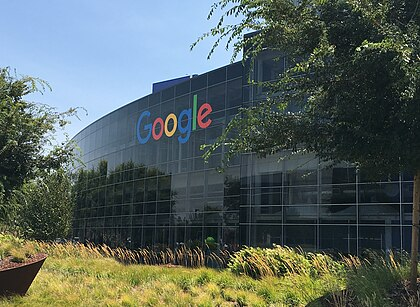

Wiki
Google LLC est une entreprise américaine de services technologiques fondée en 1998 dans la Silicon Valley, en Californie, par Larry Page et Sergey Brin, créateurs du moteur de recherche Google.
C'est une filiale de la société Alphabet depuis août 201510.
L'entreprise s'est principalement fait connaître à travers la situation monopolistique de son moteur de recherche, concurrencé historiquement par AltaVista puis par Yahoo! et Bing. Elle a ensuite procédé à de nombreuses acquisitions et développements et détient aujourd'hui de nombreux logiciels et sites web notables parmi lesquels YouTube, le système d'exploitation pour téléphones mobiles Android, ainsi que d'autres services tels que Gmail, Google Earth, Google Maps, Google Play ou Google Workspace.
Après Larry Page et Eric Schmidt, son directeur général est, depuis 2015, Pichai Sundararajan11.
Google est devenue l'une des premières entreprises américaines et mondiales par sa valorisation boursière, quelques années après une entrée en bourse originale. Début 2008, elle valait 176 milliards de dollars à Wall Street12. Le 1er février 2016, sa capitalisation boursière dépasse celle d'Apple et devient la première des États-Unis, avec un total de 550 milliards de dollars répartis dans ses différentes catégories d'actions13.
En 2014, le classement Best Global Brands d'Interbrand positionne la marque Google en seconde position mondiale, derrière la marque Apple, avec une estimation de sa valeur à 107,43 milliards de dollars (+15 % par rapport à 2013), dépassant la barre des cent milliards de dollars pour la première fois depuis la création de ce classement en 197414. En 2016, le classement Brand Z Top 100 place Google en première position devant Apple15.
La société compte environ 50 000 employés. La plupart travaillent au siège mondial : le Googleplex, à Mountain View en Californie.
Google est l'une des plus imposantes entreprises du marché d'Internet et fait partie, avec Apple, Facebook, Amazon et Microsoft, des géants du Web (aussi appelés GAFAM)16,17,18,19. En 2011, Google possédait un parc de plus de 900 000 serveurs20, contre 400 000 en 200621, ce qui en fait le parc de serveurs le plus important au monde (2 % du nombre total
de machines), avec des appareils répartis sur 32 sites. Parallèlement, le moteur de recherche Google a indexé plus de 1 000 milliards de pages web en 200822. En octobre 2010, Google représente 6,4 % du trafic Internet mondial et affiche une croissance supérieure à celle du web23. En Europe, Google aurait une part de marché de 93 % concernant les moteurs de recherche24.
Au-delà du moteur de recherche, Google offre gratuitement de nombreux logiciels et services25 (e-mail, suite bureautique, vidéo, photo, blog, etc.) et se finance par la publicité à partir de l'an 2000, principalement avec un principe de lien sponsorisé dans les résultats de recherche et une facturation au « coût par clic » pour les annonceurs26. Cependant, la situation croissante de monopole et les
questions de vie privée inquiètent de plus en plus, de l'internaute occasionnel jusqu'à certaines grandes organisations. Google a également fait l'objet de plusieurs poursuites en justice, notamment pour plusieurs affaires de compatibilité de copyright et pour sa plateforme Google Livres
